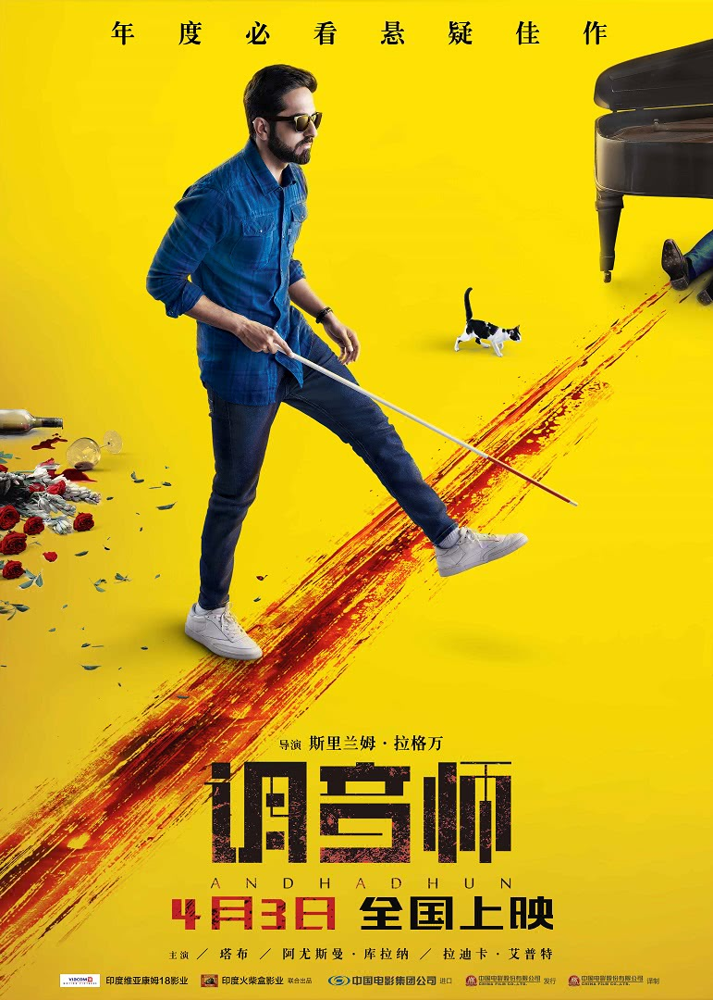

电视剧
海外剧
网络剧
年度大剧
口碑好剧
电影
院线大片
自制电影
内地
欧美大片
综艺
真人秀
独播
脱口秀
访谈
动漫
国漫
日漫
经典
治愈
纪录片
美食
自然
历史
人文
少儿
益智
儿歌
玩具
英语
邮箱
登录

调音师
The Blind Melody·电影
别 名: 看不见的旋律 调琴师
地区：印度
语言：印度语
上映时间：2017-04-03
标签：喜剧 悬疑
简介：一直假装盲人的钢琴调音师阿卡什，在意外成为一起凶杀案的唯一“目击证人”后，所遭遇的种种出其不意的经历。